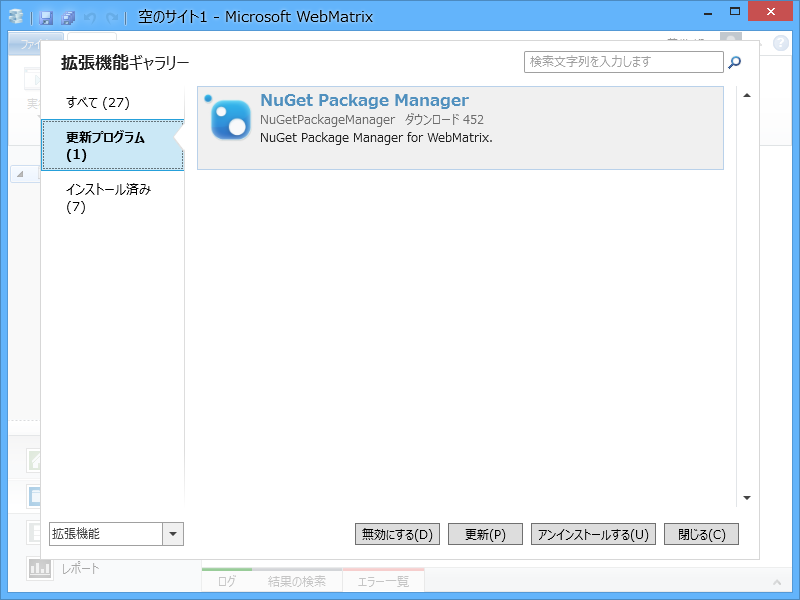
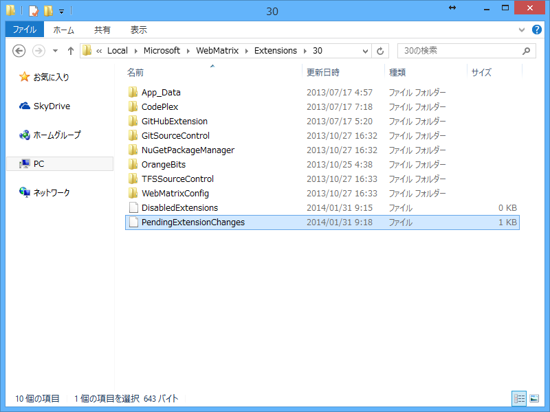
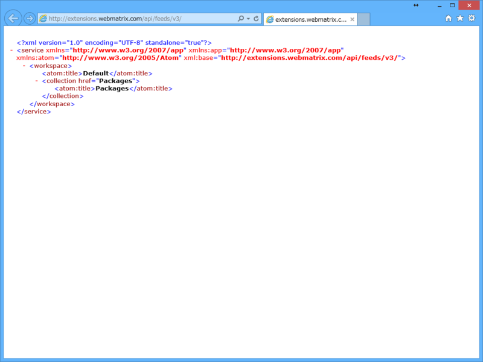
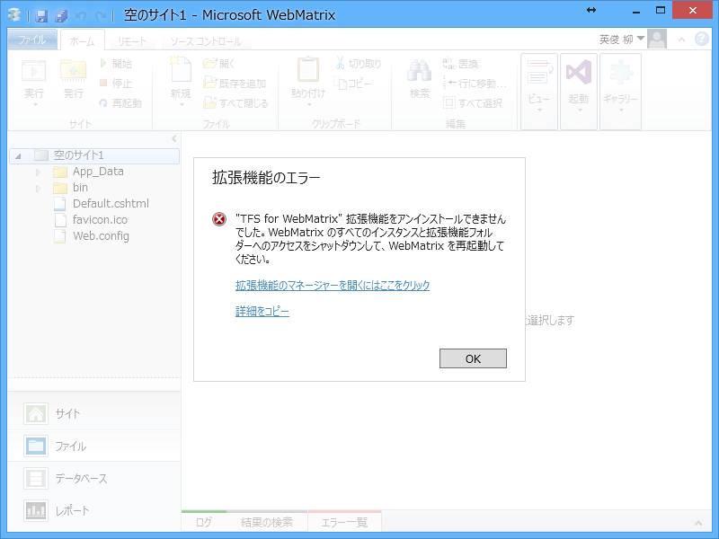

NuGet Pakage Manager 2.5.0 for WebMatrix
公開日：

The #NuGet Package Manager for #WebMatrix 3 is now open source! Its first update is available. Release notes updated: URL
2014-01-31 08:08:48 via web
NuGet 2.8 がリリースされた。それにあわせて WebMatrix の NuGet Pakage Manager にも新しいバージョンが出たようなので（しかもオープンソースになったらしい！）、さっそくアップデートしてみた。それにしても、v1.3.0 からすごいバージョンが飛びましたな。

結果は失敗だった。管理者権限で起動しないといけないのかなと思ったのだけど、そういうことでもないらしい。WebMatrix の再インストールも試みたが、状況は改善されなかった。

しょうがないので、WebMatrix の拡張機能を管理していると思わしきフォルダー %USERPROFILE%\AppData\Local\Microsoft\WebMatrix\Extensions\30 を開き、そこにあった PendingExtensionChanges の中身をのぞいてみた。
update NuGetPackageManager 2.5.0 http://extensions.webmatrix.com/api/feeds/v3/
次に http://extensions.webmatrix.com/api/feeds/v3/ をブラウザーでみてみた。

空っぽのような気がする（本当は中身があるはずなんだよね？）。試しにほかの拡張機能のアンインストールなども試してみた。

Oh……。なんでかわかるひと、教えて！
結局原因がよくわからなかったけれど（サーバーがトラぶってる？ 自分の環境が腐ってる？）、そろそろ OS の再インストールもしたいし、もう一度キレイな環境を作ってから再度チャレンジしたいと思う。